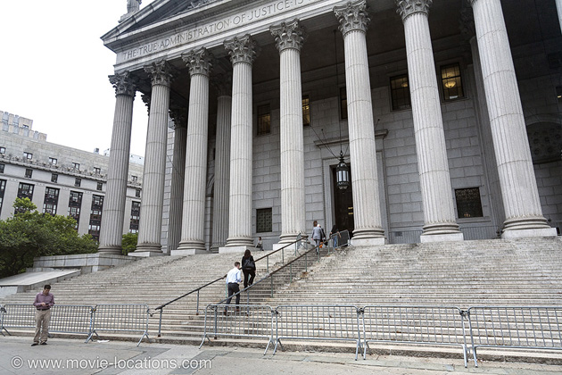

12 Angry Men
Main Content

Sidney Lumet – until then a TV director – was chosen to direct this classic claustrophobic jury room drama by co-producer Henry Fonda.
The setting is the New York County Courthouse, 60 Center Street on the northeast corner of Pearl Street and Foley Square, Lower Manhattan, but Lumet's very specific camera set-ups in the jury room, which move gradually from high, wide shots to intense close-ups, demanded a studio set.
The jury room was recreated at what was the Fox Movietone Studio, 460 West 54th Street at 10th Avenue, in the Hell's Kitchen area of Manhattan. Originally the home of Fox Movietone newsreels, the facility went on to host feature productions including 1947’s Miracle on 34th Street, Elia Kazan’s 1954 On The Waterfront, and Lumet's own Fail Safe (1964) and The Pawnbroker (1964).
It later became Camera Mart Studios, where Gordon Parks' Shaft (1971) and William Friedkin's The Exorcist were filmed, and then the Sony Music Studios, a music recording and mastering facility. In 2007, this closed and the building was demolished to provide – guess what? More luxury condos.
I wonder if they mentioned the supposed “cursed” filming of The Exorcist when selling the units?
Visit Info
Visit The Film Locations
New York
Flights: JFK Airport
Visit: New York
Travel around: MTA